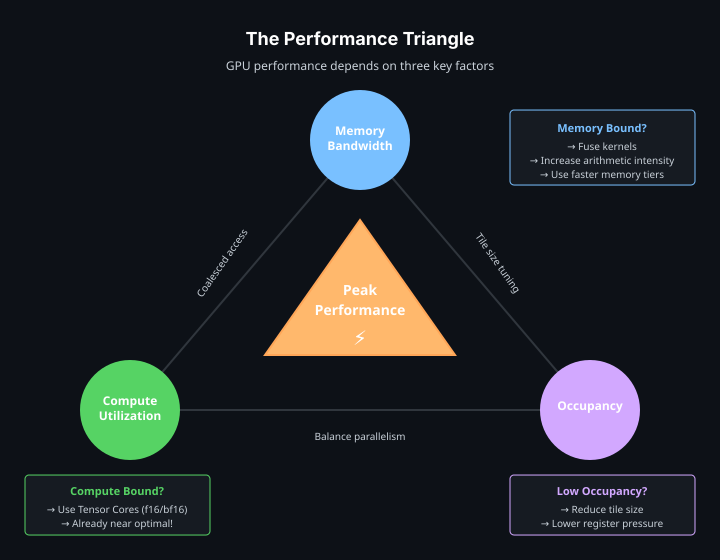

Performance#
GPU performance is usually limited by memory bandwidth, compute throughput, or occupancy. Occupancy is how much work can remain resident on the GPU at once; too little can leave hardware idle. Tile shape and memory access patterns affect all three limits.


Tile Shape#
Tile size controls how much work each tile block performs. Larger tiles improve data reuse and reduce launch overhead per element, but they also consume more registers and can reduce occupancy.
Start with powers of two or dimensions that align with the compute operation:
Workload |
Starting point |
|---|---|
Elementwise 1D |
|
Elementwise 2D |
|
GEMM |
Tile shapes compatible with Tensor Core MMA dimensions |
Reductions |
Axis sizes that avoid excessive register pressure |
Use profiling to tune from there, or search the candidates automatically with autotuning. Very small tiles spend too much time on overhead. Very large tiles can spill registers or reduce the number of resident tile blocks.
Memory Traffic and Fusion#
Keep intermediate results in tiles to avoid repeated global-memory access:
#[cutile::entry()]
fn fused<const BM: i32, const BN: i32>(
z: &mut Tensor<f32, { [BM, BN] }>,
x: &Tensor<f32, { [-1, -1] }>,
) {
let tile = x.load_like(z);
let centered = tile - reduce_max(tile, 1i32)
.reshape(shape![BM, 1])
.broadcast(shape![BM, BN]);
let exp_x = exp(centered);
let sum = reduce_sum(exp_x, 1i32)
.reshape(shape![BM, 1])
.broadcast(shape![BM, BN]);
z.store(true_div(exp_x, sum));
}
Kernel fusion applies this pattern across a pipeline. Three unfused kernels often read and write intermediate tensors several times. One fused kernel can keep those intermediates in registers.
Arithmetic Intensity#
Arithmetic intensity is compute per byte transferred. Higher intensity makes a kernel more likely to be compute-bound instead of bandwidth-bound.
Operation |
Typical intensity |
Common bottleneck |
|---|---|---|
Vector add |
Low |
Memory bandwidth |
Elementwise activation |
Low to medium |
Memory bandwidth |
Matrix-vector multiply |
Medium |
Memory bandwidth or compute |
Matrix-matrix multiply |
High |
Tensor Core throughput |
Fused attention |
High |
Compute, memory, or occupancy depending on shape |
Increase arithmetic intensity by reusing loaded tiles, fusing adjacent operations, and avoiding unnecessary host readbacks or intermediate tensors.
Tensor Cores#
Use mma and mmaf_scaled for matrix multiply paths. The compiler lowers supported dtype and shape combinations to Tensor Core instructions:
let mut acc = constant(0.0f32, shape![BM, BN]);
for k_tile in 0i32..k_tiles {
let tile_x = part_x.load([pid_m, k_tile]);
let tile_y = part_y.load([k_tile, pid_n]);
acc = mma(tile_x, tile_y, acc);
}
z.store(acc);
For block-scaled formats such as NVFP4 and MXFP8, mmaf_scaled consumes low-precision input tiles plus per-block scale tiles. See Tutorial 11: Inference with NVFP4/MXFP8.
Bounds and Mapped Partitions#
The preferred safe performance path for persistent or mapped traversal is a mapped output partition. The output partition produces bounded, disjoint indices; input partitions are indexed with plain arrays, and the compiler infers the bounds from the loops and mapped components that produce each index:
fn gemm_persistent<
T: ElementType,
const BM: i32,
const BN: i32,
const BK: i32,
const MAP_SHAPE: [i32; 2],
>(
mut z: MappedPartitionMut<T, { [BM, BN] }, MAP_SHAPE>,
x: &Tensor<T, { [-1, -1] }>,
y: &Tensor<T, { [-1, -1] }>,
) {
let part_x = x.partition(shape![BM, BK]);
let part_y = y.partition(shape![BK, BN]);
for out_idx in z.iter_indices() {
let (bid_m, bid_n) = out_idx.components();
let mut acc: Tile<T, { [BM, BN] }> = constant(T::ZERO, shape![BM, BN]);
for k_tile in 0i32..num_tiles(&part_x, 1) {
acc = mma(part_x.load([bid_m, k_tile]), part_y.load([k_tile, bid_n]), acc);
}
z.store(acc, out_idx);
}
}
with_bounds(...), Dim::new(...), and coord(...) are deprecated since 0.3.0; Bounds-Check Placement describes where the remaining checks are placed.
unchecked_accesses = true remains available when the programmer wants to opt out of runtime bounds checks explicitly:
#[cutile::entry(unchecked_accesses = true)]
unsafe fn fast_kernel<const S: [i32; 2]>(...) {
// The caller must guarantee every access is in bounds.
}
Use the unsafe path only when the launch shape and tensor sizes are guaranteed by surrounding code.
Compile-Time Hints#
Optimization hints guide code generation for a target architecture:
#[cutile::entry(
optimization_hints = (
sm_120 = (
num_cta_in_cga = 2,
occupancy = 2,
max_divisibility = 16,
num_worker_warps_per_cta = 4, // Bytecode 13.3+; valid values: 1, 2, 4, 8, 16, 32.
),
sm_90 = (num_cta_in_cga = 1),
)
)]
fn kernel<const S: [i32; 2]>(...) { ... }
Runtime CompileOptions can override entry-level hints, which makes them a tunable axis: put the candidate values in a Config and apply them in the tuner’s setup closure (see Autotuning). occupancy, num_cta_in_cga, and num_worker_warps_per_cta are architecture-specific scheduling hints; max_divisibility controls divisibility assumptions used by the compiler. num_worker_warps_per_cta accepts powers of two in the inclusive range [1, 32] and requires bytecode version 13.3 or newer. Because compile options are part of the JIT cache key, benchmark a small set of candidates instead of generating many one-off specializations.
Common Pitfalls#
Tile shape too small: overhead dominates useful work.
Tile shape too large: register pressure lowers occupancy or causes spills.
Wrong dtype: using
f32whenf16,bf16, FP8, or block-scaled formats are acceptable can leave Tensor Core throughput unused.Excessive synchronization:
.sync()after every operation creates CPU/GPU gaps.Unfused pipeline: intermediate tensors add global memory traffic.
Strided access pattern: tile loads coalesce well, but algorithmic strides can still reduce effective bandwidth.
Profile before and after each change. Debugging and Profiling describes Nsight Compute and Nsight Systems.
Measuring Kernels#
cutile::bench provides device-event timing for kernel measurement and A/B comparison:
use cutile::bench::{do_bench, do_bench_paired, BenchOptions};
let r = do_bench(&stream, &BenchOptions::default(), |s| {
my_kernel(z.partition([128]), x.clone(), y.clone()).sync_on(s).map(|_| ()).map_err(Into::into)
})?;
println!("median {:.3} ms over {} reps", r.median_ms(), r.reps());
Timing uses CUDA events (device timeline, not host clocks), warmup absorbs first-launch JIT, the L2 cache is cleared between reps, and results report medians and quantiles. When comparing two configurations, use do_bench_paired. It alternates the arms rep by rep, so clock and thermal drift cannot masquerade as a difference between them.
Autotuning (experimental)#
cutile::tune measures candidate configurations and saves the trials and
winning configuration. It requires the experimental-tune Cargo feature;
see Autotuning for the API. This example searches block sizes
for an RMS normalization kernel:
cargo run -p cutile-examples --example autotune --features experimental-tune
Continue to Interoperability.